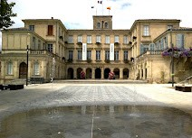
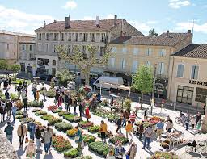

Mairie Valréas

Voilà pourquoi cette région de Valréas était une enclave.
Et elle l'est restée, car après la Révolution, à la formation des départements,
la population de l'enclave fut consultée par référendum et se prononça
pour un rattachement au Vaucluse, et donc pour le fait d'être provençaux.
